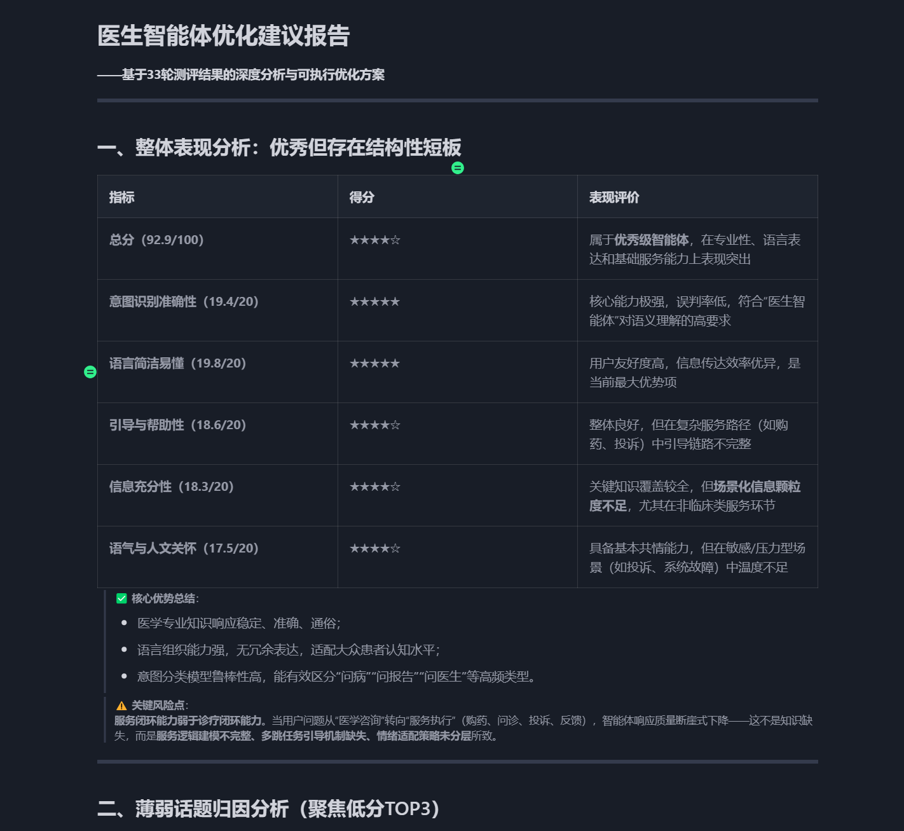
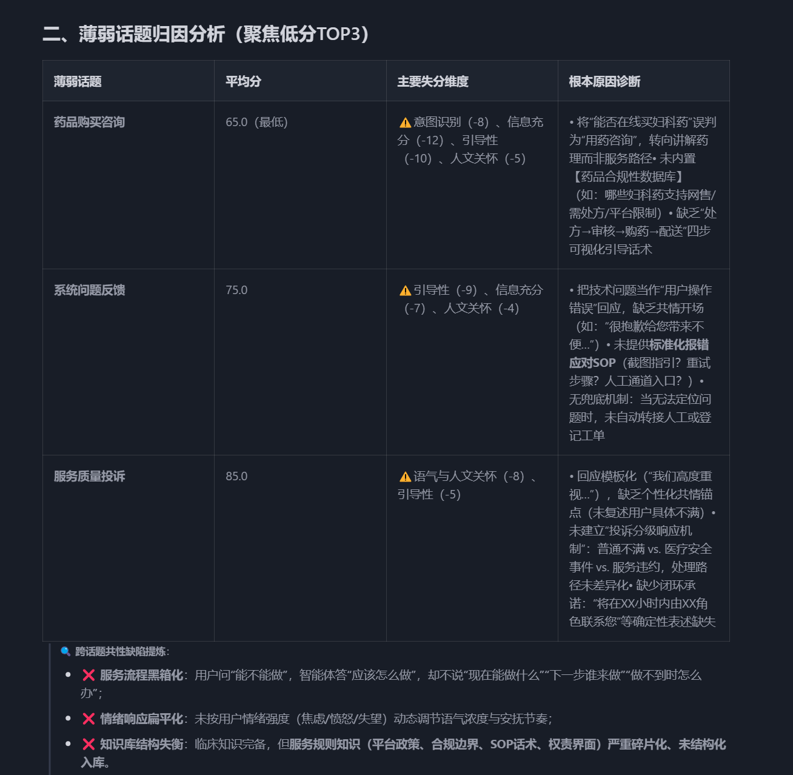

智能体迭代常缺标准化评估，人工逐条难复现。本项目以「用户智能体 + 裁判智能体」双角色，配合多维评分与 Markdown 无代码配置，把回归从人工逐条升级为自动化批量，效率从天级缩短至分钟级。
为什么需要自动化测评
- 效率：从逐条对话到批量运行，一夜可完成大量测试
- 标准：统一标尺、多维度客观量化，减少因人而异
- 成本：一次编写配置，可持续复用
- 反馈：结构化报告直接指导 Prompt / 流程优化
- 覆盖：全场景批量覆盖，降低抽样遗漏
核心能力
- 双模对弈：用户智能体模拟真实多轮对话
- 多维评分：裁判智能体按自定义标准量化打分
- Markdown 配置：无需改代码即可定义测试方案
- 报告与闭环：汇总薄弱点并生成优化建议
测评报告


架构要点
- Loader：解析 Markdown 配置，初始化任务队列
- User Agent：模拟不同背景用户发起咨询
- FastGPT Client：异步多轮对话状态维护
- Judge Agent：按评分标准客观打分
- Optimizer：汇总缺陷模式，输出优化策略
技术栈
- Python · AsyncIO · LLM · FastGPT · 多智能体